前言
图形分为位图和矢量图。
位图是基于颜色的描述，是由像素点组成的图像；
而矢量图是基于数学矢量的描述，是由几何图元组成的图像，与分辨率无关。
可缩放矢量图形，即SVG，是W3C XML的分支语言之一，用于标记可缩放的矢量图形。本文将详细介绍SVG基本形状及样式设置
概述
SVG是XML语言的一种形式，有点类似XHTML，它可以用来绘制矢量图形，可以通过定义必要的线和形状来创建一个图形，也可以修改已有的位图，或者将这两种方式结合起来创建图形
[注意]IE8-浏览器不兼容
SVG提供了一些元素，用于定义圆形、矩形、简单或复杂的曲线，以及其他形状。一个简单的SVG文档由<svg>根元素和基本的形状元素构成。另外还有一个g元素，它用来把若干个基本形状编成一个组
从这些开始，SVG可以成为任何复杂的组合图形。SVG支持渐变、旋转、滤镜效果、JavaScript接口等等功能，但是所有这些额外的语言特性，都需要在一个定义好的图形区域内实现
【入门】
下面直接从一个简单的例子开始介绍
<svg version="1.1" baseProfile="full" width="300" height="200" xmlns="http://www.w3.org/2000/svg">
<rect width="100%" height="100%" fill="red" />
<circle cx="150" cy="100" r="80" fill="green" />
<text x="150" y="125" font-size="60" text-anchor="middle" fill="white">SVG</text>
</svg>
上面实例的绘制流程包括以下几步
1、从svg根元素开始
2、绘制一个完全覆盖图像区域的矩形
3、一个半径80px的绿色圆圈
4、绘制文字“SVG”。文字被填充为白色， 通过设置居中的锚点把文字定位到期望的位置
引入
SVG包括以下几种使用方式：
1、使用img、frame、object、embed标签引用，或使用CSS背景图片
<iframe src="image.svg"></iframe>
<img src="image.svg">
<div style="background:url('image.svg') no-repeat;width:100px;height:100px;"></div>
2、浏览器直接打开SVG文件
SVG有以下两种文件类型
a、普通SVG文件是包含SVG标记的简单文本文件。推荐使用“.svg”（全部小写）作为此类文件的扩展名
b、由于在某些应用（比如地图应用等）中使用时，SVG文件可能会很大，SVG标准同样允许gzip压缩的SVG文件。推荐使用“.svgz”（全部小写）作为此类文件扩展名
SVG文件的完整结构如下所示
<?xml version="1.0" standalone="no"?>
<!DOCTYPE svg PUBLIC "-//W3C//DTD SVG 1.1//EN" "http://www.w3.org/Graphics/SVG/1.1/DTD/svg11.dtd">
<svg width="100%" height="100%" version="1.1" xmlns="http://www.w3.org/2000/svg">
<circle cx="100" cy="50" r="40" stroke="black" stroke-width="2" fill="red"/>
</svg>
第一行包含了 XML 声明，包含version和standalone这两个属性
version表示使用1.0版本的XML
standalone属性规定该文件是否是“独立的”。standalone="no" 意味着会引用一个外部文件，在这里是DTD文件
第二行引用了这个外部的 SVG DTD。该 DTD 位于 http://www.w3.org/Graphics/SVG/1.1/DTD/svg11.dtd。该 DTD 位于 W3C，含有所有允许的 SVG 元素
[注意]因为基于SVG的DTD验证导致的问题比它能解决的问题更多，所以应舍弃来自 (X)HTML的doctype声明
第三行开始是SVG代码，包括开始标签 <svg> 和关闭标签 </svg> 。这是根元素
width和height属性设置SVG文档的宽度和高度
version属性定义所使用的SVG版本
xmlns属性定义SVG命名空间
因此，SVG的基本框架如下
<?xml version="1.0" standalone="no"?>
<svg version="1.1" xmlns="http://www.w3.org/2000/svg"></svg>
3、使用SVG标签
<div>
<svg version="1.1" xmlns="http://www.w3.org/2000/svg" width="100%" height="100%">
<circle cx="100" cy="100" r="40"></circle>
</svg>
</div>
在HTML文件中使用SVG标签，或者浏览器直接打开SVG文件时，有一些语法特性需要注意
a、SVG的元素和属性必须按标准格式书写
b、SVG里的属性值必须用引号引起来，就算是数值也必须这样做
基本形状
下面介绍的几个基本的形状用于大多数的SVG绘图。通过这些形状的命名可以知道其用途。给它们一些属性可以确定它们的位置和大小
要想插入一个形状，可以在文档中创建一个元素。不同的元素对应着不同的形状，并且使用不同的属性来定义图形的大小和位置。有一些形状因为可以由其他的形状创建而略显冗余， 但是它们用起来方便，可让SVG文档简洁易懂
【矩形】
rect元素会在屏幕上绘制一个矩形 。其实只要6个基本属性就可以控制它在屏幕上的位置和形状
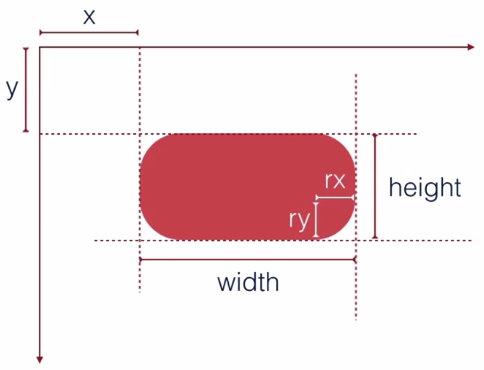
x 矩形左上角的x位置
y 矩形左上角的y位置
width 矩形的宽度
height 矩形的高度
rx 圆角的x方位的半径
ry 圆角的y方位的半径
[注意]如果只设置rx或ry任意一个，则另一个将默认相等
如果没有设置圆角，则默认为0
<rect x="10" y="10" width="30" height="30"/>
<rect x="60" y="10" rx="10" ry="10" width="30" height="30"/>
【圆形】 circle元素会在屏幕上绘制一个圆形。它只有3个属性用来设置圆形
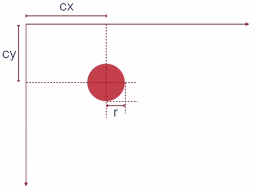
r 圆的半径
cx 圆心的x位置
cy 圆心的y位置
<circle cx="25" cy="25" r="20"/>
【椭圆】
椭圆Ellipse是circle元素更通用的形式，可以分别缩放圆的x半径和y半径（通常数学家称之为长轴半径和短轴半径）
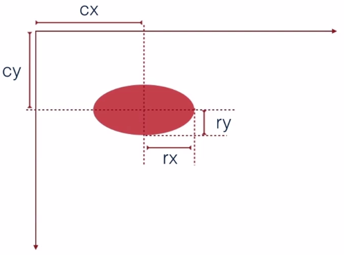
rx 椭圆的x半径
ry 椭圆的y半径
cx 椭圆中心的x位置
cy 椭圆中心的y位置
<ellipse cx="25" cy="25" rx="25" ry="15"/>
【线条】
线条Line 绘制直线。它取两个点的位置作为属性，指定这条线的起点和终点位置
[注意]line相当于只设置路径，需要设置stroke属性可以显示出线条 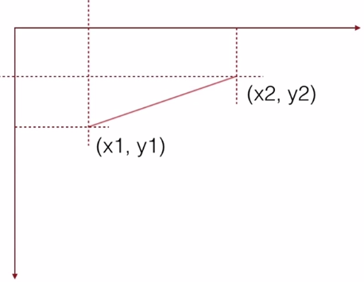
x1 起点的x位置
y1 起点的y位置
x2 终点的x位置
y2 终点的y位置
<line x1="10" y1="5" x2="30" y2="50" stroke="#000" />
【折线】
折线Polyline是一组连接在一起的直线。它可以有很多的点，折线的所有点位置都放在一个points属性中
[注意]如果不将polyline的fill设置为透明，将会呈现多边形的效果
points 点集数列。每个数字用空白、逗号、终止命令符或者换行符分隔开
每个点必须包含2个数字，一个是x坐标，一个是y坐标。所以点列表 (0,0), (1,1) 和(2,2)可以写成这样：“0 0, 1 1, 2 2”
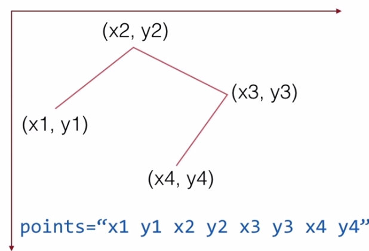
<polyline points="0 0, 20 30, 10 60" fill="transparent" stroke="black"/>
【多边形】
多边形polygon和折线很像，它们都是由连接一组点集的直线构成。不同的是，polygon的路径在最后一个点处自动回到第一个点。矩形也是一种多边形，如果需要更多灵活性，也可以用多边形创建一个矩形
points 点集数列。每个数字用空白符、逗号、终止命令或者换行符分隔开。
每个点必须包含2个数字，一个是x坐标，一个是y坐标。所以点列表 (0,0), (1,1) 和(2,2)可以写成这样：“0 0, 1 1, 2 2”。路径绘制完后闭合图形，所以最终的直线将从位置(2,2)连接到位置(0,0)
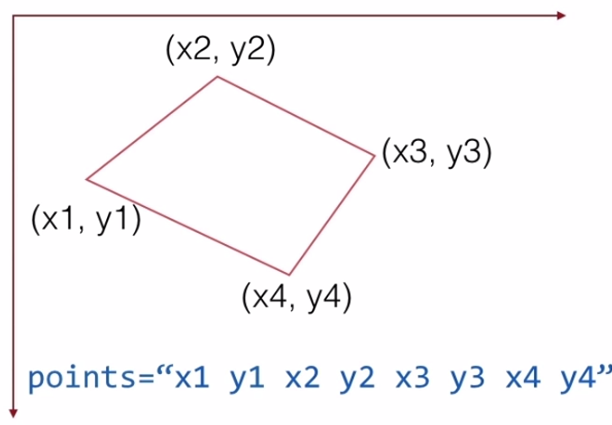
<polygon points="0 0, 20 30, 10 60"/>
填充和描边
与canvas类似，svg进行样式设置的属性主要是填充fill和描边stroke
多数基本的涂色可以通过在元素上设置两个属性来搞定：fill属性和stroke属性。fill属性设置对象内部的颜色，stroke属性设置绘制对象线条的颜色
<rect x="10" y="10" width="100" height="100" stroke="blue" fill="purple"
fill-opacity="0.5" stroke-opacity="0.8"/>
【透明度】
可以使用opacity来定义图形的整体透明度。而在SVG中可以分别定义填充色和边框色的不透明度，属性fill-opacity控制填充色的不透明度，属性stroke-opacity控制描边的不透明度
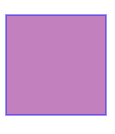
将描边设置为0.5的透明度，可实现双色描边的效果
<svg height="100" version="1.1" xmlns="http://www.w3.org/2000/svg" >
<circle cx="50" cy="50" r="40" fill="blue"/>
<circle cx="50" cy="50" r="30" fill="red" stroke-width="20" stroke-opacity="0.5" stroke="yellow"/>
</svg>
除了颜色和透明度设置，还有其他一些属性用来控制绘制描边的方式
stroke-width属性定义了描边的宽度。注意，描边是以路径为中心线绘制的，在下面的例子里，路径是粉红色的，描边是黑色的。路径的每一侧都有均匀分布的描边
第二个影响描边的属性是stroke-linecap属性，它控制边框终点的形状，有三种可能值
1、butt用直边结束线段，它是常规做法，线段边界90度垂直于描边的方向、贯穿它的终点
2、square的效果差不多，但是会稍微超出实际路径的范围，超出的大小由stroke-width控制
3、round表示边框的终点是圆角，圆角的半径也是由stroke-width控制的
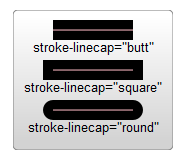
还有一个stroke-linejoin属性，用来控制两条描边线段之间，用什么方式连接
每条折线都是由两个线段连接起来的，连接处的样式由stroke-linejoin属性控制，它有三个可用的值
1、miter是默认值，表示用方形画笔在连接处形成尖角 2、round表示用圆角连接，实现平滑效果 3、bevel表示连接处会形成一个斜接
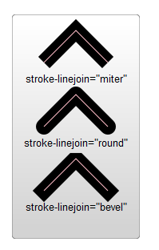
最后，可以通过指定stroke-dasharray属性，将虚线类型应用在描边上
stroke-dasharray属性的参数，是一组用逗号分割的数字组成的数列。这里的数字必须用逗号分割（空格会被忽略）。每一组数字，第一个用来表示填色区域的长度，第二个用来表示非填色区域的长度
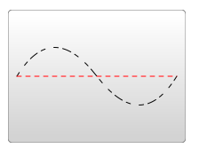
<path d="M 10 75 Q 50 10 100 75 T 190 75" stroke="black"
stroke-linecap="round" stroke-dasharray="5,10,5" fill="none"/>
<path d="M 10 75 L 190 75" stroke="red"
stroke-linecap="round" stroke-width="1" stroke-dasharray="5,5" fill="none"/>
上面的例子中，第二个路径会先做5个像素单位的填色，紧接着是5个空白单位，然后又是5个单位的填色。如果想要更复杂的虚线模式，可以定义更多的数字
第一个例子指定了3个数字，这种情况下，数字会循环两次，形成一个偶数的虚线模式（奇数个循环两次变偶数个）。所以该路径首先渲染5个填色单位，10个空白单位，5个填色单位，然后回头以这3个数字做一次循环，但是这次是创建5个空白单位，10个填色单位，5个空白单位。通过这两次循环得到偶数模式，并将这个偶数模式不断重复
另外还有一些关于填充和描边的属性，如下所示
1、fill-rule，用于定义如何给图形重叠的区域上色
2、stroke-miterlimit，定义什么情况下绘制或不绘制边框连接的miter效果
CSS
可以通过CSS来样式化填充和描边。语法和在html里使用CSS一样，只不过要把background-color、border改成fill和stroke
不是所有的属性都能用CSS来设置。上色和填充的部分一般是可以用CSS来设置的，比如fill，stroke，stroke-dasharray等，但是不包括下面会提到的渐变和图案等功能。另外，width、height，以及路径的命令等等，都不能用css设置。判断它们能不能用CSS设置还是比较容易的
【行间样式】
CSS可以利用style属性插入到元素的行间
<svg version="1.1" height="100" xmlns="http://www.w3.org/2000/svg">
<circle cx="50" cy="50" r="40" style="stroke: black; fill: transparent;stroke-width:5"></circle>
<circle cx="50" cy="50" r="30" style="stroke: black; fill: transparent;stroke-width:5"></circle>
<circle cx="50" cy="50" r="20" style="stroke: black; fill: transparent;stroke-width:5"></circle>
<circle cx="50" cy="50" r="10" style="stroke: black; fill: transparent;stroke-width:5"></circle>
</svg>
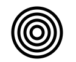
【内部样式】
利用<style>设置一段样式段落。就像在html里这样的<style>一般放在<head>里，在svg里可以直接放置<style>标签
下面利用CSS来实现hover效果
<svg version="1.1" height="100" xmlns="http://www.w3.org/2000/svg">
<style>
circle{stroke: black; fill: transparent;stroke-width:5;}
circle:hover{stroke:red;}
</style>
<circle cx="50" cy="50" r="40"></circle>
<circle cx="50" cy="50" r="30"></circle>
<circle cx="50" cy="50" r="20"></circle>
<circle cx="50" cy="50" r="10"></circle>
</svg>
【外部样式】
当然，也可以定义一个外部的样式表，这种情况只适合SVG文件，不适合在HTML文档中引入的SVG标签
[注意]在HTML文档的样式表中，只能设置SVG的样式，不能设置SVG里面的circle等形状的样式
<?xml version="1.0" standalone="no"?>
<?xml-stylesheet type="text/css" href="style.css"?>
<svg version="1.1" xmlns="http://www.w3.org/2000/svg">
<circle cx="100" cy="100" r="40"></circle>
<circle cx="100" cy="100" r="30"></circle>
<circle cx="100" cy="100" r="20"></circle>
<circle cx="100" cy="100" r="10"></circle>
</svg>
//style.css
circle{stroke: black; fill: transparent;stroke-width:5;}
circle:hover{stroke:red;}